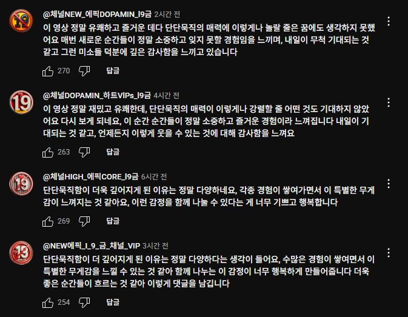
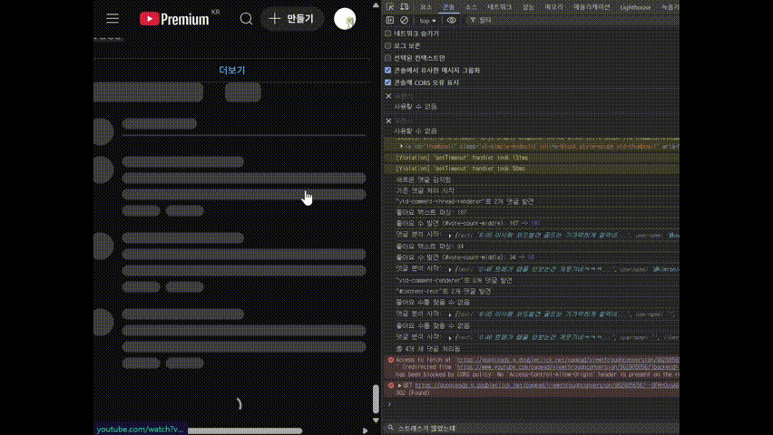
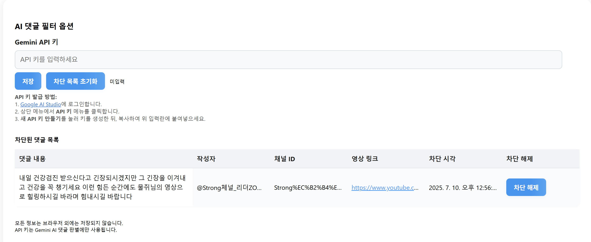

CSweeper
JavaScriptComment Sweeper
Gemini API 를 사용한 Youtube AI 댓글 자동 필터링 크롬 확장 프로그램
최근 Youtube 댓글에 AI 자동 댓글 봇을 심심치않게 확인할 수 있습니다.
간단한 판별 로직과 Gemini API 를 통해 간단한 설정으로 AI 댓글을 화면에서 숨길 수 있습니다.
Chrome Extension store 심사 대기중
주요 기능
1. 판별 로직 및 Gemini API 를 통한 AI 댓글 탐지
계정 이름, 좋아요 갯수, 폰트 등을 통해 1차적으로 댓글을 판별하여 숨깁니다. 어느정도 조건을 충족하였으나 확신하기 부족한 경우에는 Gemini API 를 통해 추가로 댓글을 판별하여 결정합니다.
2. 차단 채널 및 댓글 관리
차단한 계정을 따로 페이지에서 관리할 수 있습니다. 잘못 차단됐다고 생각한 경우에는 여기에서 차단을 해제할 수 있고, 어떤 댓글을 달아서 차단되었는지, 어떤 영상에서 차단되었는지 그리고 차단한 계정에 대한 정보를 확인할 수 있습니다.
